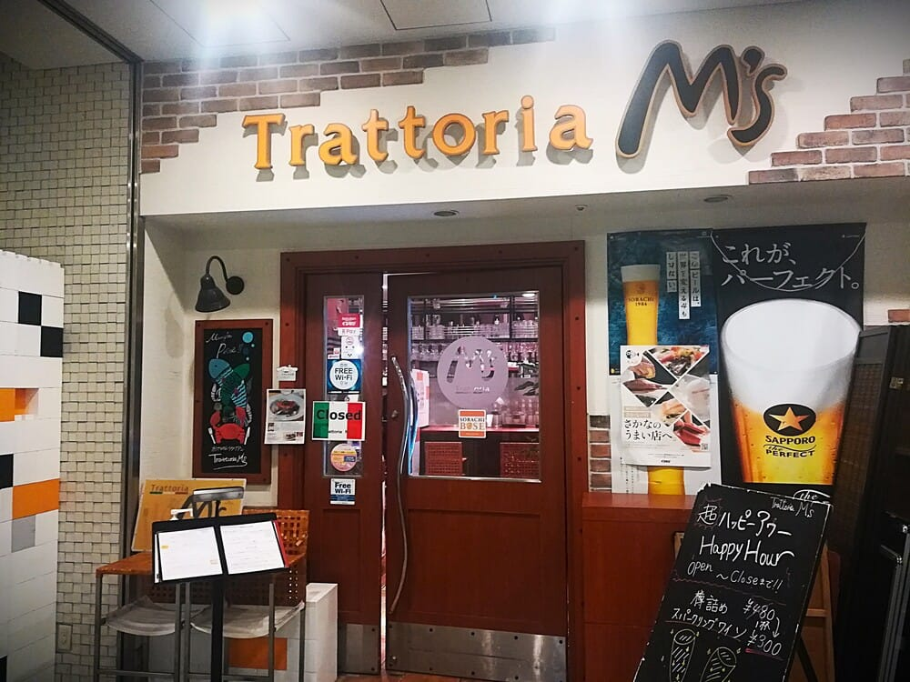

📷
Trattoria M's（蒲田）― アメフト部OBオーナーの本格お魚イタリアン
「大人数でも安心して使えるイタリアン。
仲間と行くなら、オーナーも元アメフト仲間のこの店へ。」
仲間と行くなら、オーナーも元アメフト仲間のこの店へ。」
― FOOTBALL CONNECTION 編集部コメント
FOOTBALL CONNECTION MEMBER
オーナー三井光秀氏は立教大学Rushers OBで、フラッグフットボールの経験も持つ。アメフト関係者が自然と集まるアットホームな空間。
🍝 このお店について
蒲田5丁目、京急EXインのB1F。
階段を下りると広がるのは、魚介をメインにした季節感あるイタリアンの世界だ。
温かいサービスと落ち着いた空間が評判で、
ランチ・ディナーの2部制で営業している（14:30〜17:00は休憩）。
本格お魚イタリアン
旬の魚介を活かした本格イタリア料理。
パスタ・前菜・ドルチェまで素材にこだわり、
一度食べたらリピートしたくなるクオリティだ。
パスタ・前菜・ドルチェまで素材にこだわり、
一度食べたらリピートしたくなるクオリティだ。
大人数でも安心
少人数の食事から団体宴会まで幅広く対応。
懇親会・チーム飲み・打ち上げなど、グループ利用に強い。
事前予約がおすすめ。
懇親会・チーム飲み・打ち上げなど、グループ利用に強い。
事前予約がおすすめ。
🏈 アメフト関係者への一言
オーナーがアメフトOBというだけで、安心感がまるで違う。
「同じフィールドを経験した仲間の店」として、
気兼ねなく団体予約できるのがこの店の強みだ。
試合後の打ち上げ、懇親会の食事会、チームの節目の集まりに。
蒲田でイタリアンなら、仲間の店へ行こう——
それがTrattoria M'sだ。
📅 おすすめ利用シーン
懇親会・
同期会
同期会
試合後の
打ち上げ
打ち上げ
チームで
食事
食事
お祝い・
記念日
記念日
初対面
交流
交流
ランチ
利用
利用
🎫 FOOTBALL Connection 来店特典
来店時にスタッフへ合言葉をお伝えください
「タッチダウン！」
合言葉で来店特典あり（詳細は店舗へご確認ください）
📋 基本情報
| 🏪 店名 | Trattoria M's |
| 📍 エリア | 東京都大田区 蒲田 |
| 🚉 最寄駅 | JR蒲田駅 / 京急蒲田駅 |
| 🏠 住所 | 東京都大田区蒲田5-28-18 京急EXイン B1F |
| 📞 電話 | 03-3735-8405 |
| 🕐 営業 | 月〜木 11:30-14:30 / 17:00-22:30 金 11:30-14:30 / 17:00-23:00 土・祝 11:30-15:00 / 17:00-22:30 |
| 🗓️ 定休日 | 日曜日 |
| 🍽️ ジャンル | イタリアン（お魚イタリアン） |
| @trattoriams | |
| 🔗 食べログ | 食べログで見る |